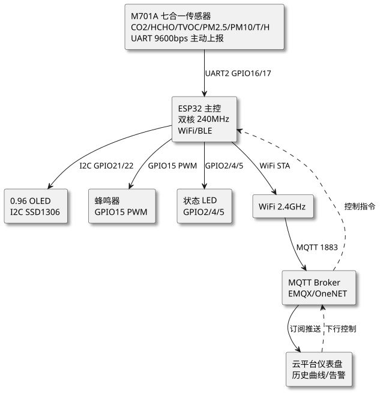
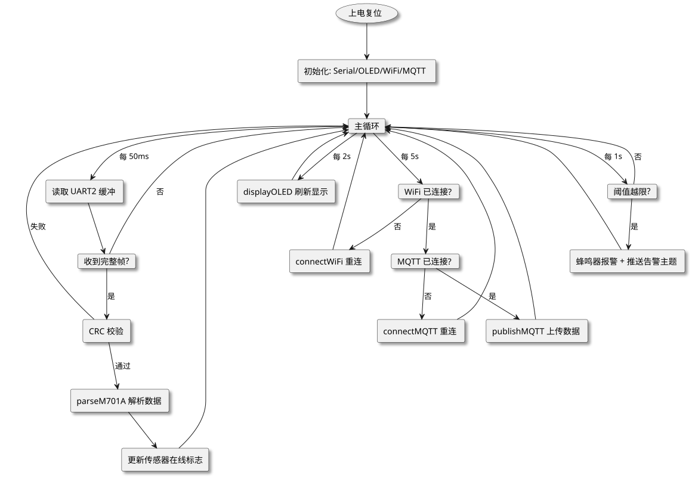

第 34 章 空气质量监测站（M701A+ESP32 Arduino）
学习目标
- 掌握基于 ESP32 与 Arduino 框架的物联网项目需求分析方法
- 理解 M701A 七合一空气质量传感器的 UART 数据帧协议与 CRC 校验机制
- 学会使用 ESP32 HardwareSerial2 与 OLED（I2C）实现数据采集与本地显示
- 掌握 WiFi 连接、MQTT 通信与云平台数据上传的完整实现流程
- 能独立完成空气质量监测站的硬件搭建、固件开发、调试与功能扩展
§34.1 项目需求分析
随着《GB 3095—2012 环境空气质量标准》与《GB/T 18883—2022 室内空气质量标准》的深入实施，公众对室内外空气质量（IAQ, Indoor Air Quality）的关注度持续提升。本项目面向"智慧环境"行业场景，设计一款基于 ESP32 与 M701A 七合一传感器的低成本、网络化空气质量监测站，可广泛应用于教室、办公室、家居、车间、温室等场所。
§34.1.1 功能需求
- 多参数采集：实时采集 CO₂、甲醛（HCHO）、TVOC、PM2.5、PM10、温度、湿度共 7 项参数。
- 本地显示：0.96″ OLED 屏幕分页轮播显示当前 7 项数据，刷新周期 2 秒。
- 云端上传：通过 WiFi 将数据以 JSON 报文经 MQTT 协议上传至公有云 IoT 平台（如 EMQX、OneNET、阿里云 IoT）。
- 阈值报警：CO₂>1000 ppm 或 PM2.5>75 μg/m³ 时蜂鸣器报警并通过 MQTT 推送告警主题。
- 异常指示：LED 指示 WiFi 连接状态、MQTT 上线状态、传感器在线状态。
§34.1.2 性能指标
| 指标项 | 设计目标 | 说明 |
|---|---|---|
| 采样周期 | 2 s | 由 M701A 主动输出帧决定 |
| CO₂ 量程 | 400–5000 ppm | NDIR 原理，精度 ±50 ppm |
| PM2.5 量程 | 0–999 μg/m³ | 激光散射，精度 ±10% |
| 温度量程 | −40–100 ℃ | 精度 ±0.5 ℃ |
| 湿度量程 | 0–100 %RH | 精度 ±3 %RH |
| WiFi 上传延迟 | < 500 ms | 本地局域网内 |
| 整机功耗 | < 1.2 W | 5V/240mA 供电 |
§34.1.3 应用场景
- 教室空气质量监测：CO₂ 浓度超 1000 ppm 时自动提示开窗通风，改善学生学习效率。
- 办公室与家居：长期监测甲醛、TVOC，预防新装修污染造成的健康危害。
- 温室大棚：监测 CO₂ 浓度指导气肥施用，监测温湿度控制通风与灌溉。
- 工业车间：监测 PM2.5/PM10 评估粉尘职业暴露，满足职业卫生监管要求。
§34.2 系统架构设计
系统采用"感知层—主控层—通信层—应用层"四层架构，感知层由 M701A 七合一传感器完成环境参数采集，主控层由 ESP32 完成协议解析、数据加工与业务调度，通信层通过 WiFi+MQTT 上行至云平台，应用层在 OLED 提供本地可视化、在云端提供历史曲线与告警推送。

查看 PlantUML 源码
@startuml
skinparam defaultFontName "Microsoft YaHei"
skinparam backgroundColor #ffffff
skinparam componentStyle rectangle
skinparam shadowing true
top to bottom direction
component "M701A 七合一传感器\nCO2/HCHO/TVOC/PM2.5/PM10/T/H\nUART 9600bps 主动上报" as M701
component "ESP32 主控\n双核 240MHz\nWiFi/BLE" as ESP32
component "0.96 OLED\nI2C SSD1306" as OLED
component "蜂鸣器\nGPIO15 PWM" as BUZZ
component "状态 LED\nGPIO2/4/5" as LED
component "WiFi 2.4GHz" as WIFI
component "MQTT Broker\nEMQX/OneNET" as MQTT
component "云平台仪表盘\n历史曲线/告警" as CLOUD
M701 --> ESP32 : UART2 GPIO16/17
ESP32 --> OLED : I2C GPIO21/22
ESP32 --> BUZZ : GPIO15 PWM
ESP32 --> LED : GPIO2/4/5
ESP32 --> WIFI : WiFi STA
WIFI --> MQTT : MQTT 1883
MQTT --> CLOUD : 订阅推送
CLOUD ..> MQTT : 下行控制
MQTT ..> ESP32 : 控制指令
@enduml架构设计要点说明：
- 双串口分工：ESP32 的 UART0（GPIO1/3）保留给 USB 调试日志输出，UART2（GPIO16/17）专用接收 M701A 数据帧，互不干扰。
- I2C 总线：OLED 与未来扩展的 BME280 等传感器共用 I2C 总线（GPIO21 SDA / GPIO22 SCL），节省引脚。
- 非阻塞设计：使用
millis()时间片轮转代替delay()，确保 WiFi 重连、MQTT 心跳与 OLED 刷新不阻塞数据接收。 - 断网缓存：当 WiFi/MQTT 断开时，数据仍正常采集并显示在 OLED，最长缓存 30 条到 PSRAM，网络恢复后续传。
§34.3 硬件设计
本系统硬件以 ESP32 DevKit V1 开发板为核心，外接 M701A 传感器模块、0.96″ OLED 显示模块、蜂鸣器、LED 与电源。下面分别给出 BOM 物料清单与接线表。
§34.3.1 BOM 物料清单
| 序号 | 元件名称 | 规格型号 | 数量 | 单价/元 | 用途 |
|---|---|---|---|---|---|
| 1 | ESP32 开发板 | DevKit V1 / NodeMCU-32S | 1 | 25 | 主控 MCU+WiFi |
| 2 | 七合一空气传感器 | M701A UART 模块 | 1 | 120 | 环境参数采集 |
| 3 | OLED 显示屏 | 0.96″ SSD1306 I2C 128×64 | 1 | 10 | 本地数据显示 |
| 4 | 有源蜂鸣器 | 5V 有源 | 1 | 2 | 阈值报警 |
| 5 | LED 指示灯 | 3 mm 红/绿/黄 | 3 | 0.5 | WiFi/MQTT/传感器状态 |
| 6 | 电阻 | 220Ω 1/4W | 3 | 0.1 | LED 限流 |
| 7 | 面包板 | 830 孔 | 1 | 5 | 原型搭建 |
| 8 | 杜邦线 | 公-公/公-母 40 芯 | 1 | 5 | 线路连接 |
| 9 | USB 电源适配器 | 5V/2A Type-C | 1 | 15 | 整机供电 |
| 10 | 跳线开关 | 轻触按键 6×6 | 1 | 0.5 | 配置/复位 |
§34.3.2 接线表
| ESP32 引脚 | 外设引脚 | 功能 | 电平/接口 |
|---|---|---|---|
| 3V3 | M701A VCC | 传感器供电（5V 模块需接 5V，3.3V 版本接 3V3） | — |
| GND | M701A GND | 共地 | — |
| GPIO16（RX2） | M701A TX | ESP32 接收 M701A 数据 | UART2 9600bps |
| GPIO17（TX2） | M701A RX | 预留：下发查询指令 | UART2 9600bps |
| GPIO21 | OLED SDA | I2C 数据线 | I2C 100kHz |
| GPIO22 | OLED SCL | I2C 时钟线 | I2C 100kHz |
| GPIO15 | 蜂鸣器 + | PWM 报警驱动 | 3.3V 有源 |
| GPIO2 | 红 LED | WiFi 断开指示 | 3.3V/220Ω |
| GPIO4 | 绿 LED | MQTT 在线指示 | 3.3V/220Ω |
| GPIO5 | 黄 LED | 传感器在线指示 | 3.3V/220Ω |
| GPIO0 | 按键 | 配置模式触发 | 下拉输入 |
§34.4 M701A 传感器数据协议解析
M701A 出厂默认以 UART 主动上报模式工作，波特率 9600bps，8N1，无校验位，每 2 秒自动输出一帧 17 字节数据。下表给出帧格式定义。
§34.4.1 数据帧格式
| 字节偏移 | 名称 | 含义 | 数据类型 | 量程/换算 |
|---|---|---|---|---|
| 0 | Header1 | 帧头字节 1 | 0x3C | 固定 |
| 1 | Header2 | 帧头字节 2 | 0x02 | 固定 |
| 2 | CO2_H | CO₂ 高字节 | uint8 | CO2 = (B2<<8) + B3，单位 ppm |
| 3 | CO2_L | CO₂ 低字节 | uint8 | 量程 400–5000 ppm |
| 4 | HCHO_H | 甲醛高字节 | uint8 | HCHO = (B4<<8) + B5，单位 μg/m³ |
| 5 | HCHO_L | 甲醛低字节 | uint8 | 量程 0–2000 μg/m³ |
| 6 | TVOC_H | TVOC 高字节 | uint8 | TVOC = (B6<<8) + B7，单位 μg/m³ |
| 7 | TVOC_L | TVOC 低字节 | uint8 | 量程 0–2000 μg/m³ |
| 8 | PM25_H | PM2.5 高字节 | uint8 | PM2.5 = (B8<<8) + B9，单位 μg/m³ |
| 9 | PM25_L | PM2.5 低字节 | uint8 | 量程 0–999 μg/m³ |
| 10 | PM10_H | PM10 高字节 | uint8 | PM10 = (B10<<8) + B11，单位 μg/m³ |
| 11 | PM10_L | PM10 低字节 | uint8 | 量程 0–1000 μg/m³ |
| 12 | TEMP_H | 温度高字节 | uint8 | Temp = ((int16)((B12<<8)+B13) − 1000) / 10.0，单位 ℃ |
| 13 | TEMP_L | 温度低字节 | uint8 | 量程 −40–100 ℃（带 1000 偏移） |
| 14 | HUMI | 湿度原始值 | uint8 | Humi = B14，单位 %RH（量程 0–100） |
| 15 | Reserved | 保留字节 | 0x00 | 固定 0x00 |
| 16 | Checksum | 校验和 | uint8 | B0+B1+...+B15 的低 8 位 |
§34.4.2 CRC 校验原理
M701A 采用累加和校验（Sum Checksum），即将第 0 至第 15 字节相加后取低 8 位作为校验字节 B16。接收方在解析完一帧后重新计算前 16 字节之和的低 8 位，与 B16 比较，相等则认为帧有效；不等则丢弃该帧并等待下一帧。该方式实现简单、计算量小，适合嵌入式系统。
当数据帧在传输过程中出现字节丢失或错位时，可通过帧头 0x3C 0x02 进行重新同步：解析状态机持续扫描串口缓冲，遇到 0x3C 0x02 才进入"接收数据"状态，从而提升抗干扰能力。
§34.4.3 解析示例
假设某一帧十六进制为：3C 02 03 E8 00 14 00 1E 00 1F 00 20 04 4C 3C 00 6F
- CO₂ = 0x03E8 = 1000 ppm
- HCHO = 0x0014 = 20 μg/m³
- TVOC = 0x001E = 30 μg/m³
- PM2.5 = 0x001F = 31 μg/m³
- PM10 = 0x0020 = 32 μg/m³
- 温度 = (0x044C − 1000) / 10 = (1100 − 1000) / 10 = 10.0 ℃
- 湿度 = 0x3C = 60 %RH
- 校验和 = (0x3C+0x02+0x03+0xE8+0x00+0x14+0x00+0x1E+0x00+0x1F+0x00+0x20+0x04+0x4C+0x3C+0x00) & 0xFF = 0x16F & 0xFF = 0x6F ✓
§34.5 软件架构与关键代码
软件采用 Arduino 框架开发，IDE 选择 Arduino IDE 2.x 或 PlatformIO。整体任务调度基于 millis() 时间片轮转，避免阻塞式 delay()，确保 WiFi 重连与 MQTT 心跳能够及时响应。
§34.5.1 任务流程图

查看 PlantUML 源码
@startuml
skinparam defaultFontName "Microsoft YaHei"
skinparam backgroundColor #ffffff
skinparam componentStyle rectangle
skinparam shadowing true
top to bottom direction
usecase "上电复位" as START
component "初始化: Serial/OLED/WiFi/MQTT" as INIT
card "主循环" as LOOP
component "读取 UART2 缓冲" as R1
card "收到完整帧?" as R2
component "CRC 校验" as R3
component "parseM701A 解析数据" as R4
component "更新传感器在线标志" as R5
component "displayOLED 刷新显示" as D1
card "WiFi 已连接?" as W1
component "connectWiFi 重连" as W2
card "MQTT 已连接?" as W3
component "connectMQTT 重连" as W4
component "publishMQTT 上传数据" as W5
card "阈值越限?" as A1
component "蜂鸣器报警 + 推送告警主题" as A2
START --> INIT
INIT --> LOOP
LOOP --> R1 : 每 50ms
R1 --> R2
R2 --> LOOP : 否
R2 --> R3 : 是
R3 --> LOOP : 失败
R3 --> R4 : 通过
R4 --> R5
R5 --> LOOP
LOOP --> D1 : 每 2s
D1 --> LOOP
LOOP --> W1 : 每 5s
W1 --> W2 : 否
W2 --> LOOP
W1 --> W3 : 是
W3 --> W4 : 否
W4 --> LOOP
W3 --> W5 : 是
W5 --> LOOP
LOOP --> A1 : 每 1s
A1 --> A2 : 是
A2 --> LOOP
A1 --> LOOP : 否
@enduml§34.5.2 完整 Arduino 代码
§34.5.2.1 程序结构与依赖说明
下面给出完整的 main.ino，包含 setup()、loop()、parseM701A()、displayOLED()、connectWiFi()、publishMQTT() 等全部函数。依赖库：Wire、Adafruit_GFX、Adafruit_SSD1306、WiFi、PubSubClient。
// ============================================================
// 空气质量监测站 - ESP32 + M701A
// 文件: main.ino
// 依赖: Adafruit_GFX / Adafruit_SSD1306 / PubSubClient
// ============================================================
#include <Wire.h>
#include <Adafruit_GFX.h>
#include <Adafruit_SSD1306.h>
#include <WiFi.h>
#include <PubSubClient.h>
// ============ 引脚与硬件配置 ============
#define M701A_RX_PIN 16 // ESP32 RX2 接 M701A TX
#define M701A_TX_PIN 17 // ESP32 TX2 接 M701A RX（预留）
#define BUZZER_PIN 15
#define LED_WIFI_PIN 2
#define LED_MQTT_PIN 4
#define LED_SEN_PIN 5
#define I2C_SDA 21
#define I2C_SCL 22
#define OLED_ADDR 0x3C
#define OLED_W 128
#define OLED_H 64
// ============ WiFi 配置 ============
const char* WIFI_SSID = "Your_SSID";
const char* WIFI_PASSWORD = "Your_Password";
// ============ MQTT 配置 ============
const char* MQTT_BROKER = "broker.emqx.io";
const int MQTT_PORT = 1883;
const char* MQTT_USER = "";
const char* MQTT_PASS = "";
const char* TOPIC_DATA = "/jyu/airq/ch34/data";
const char* TOPIC_ALERT = "/jyu/airq/ch34/alert";
// ============ M701A 帧定义 ============
#define FRAME_LEN 17
static uint8_t rxbuf[FRAME_LEN];
static uint8_t rxidx = 0;
static uint32_t last_byte_ms = 0;
static const uint32_t FRAME_TIMEOUT_MS = 200; // 帧间超时
// ============ 解析结果结构体 ============
struct AirData {
uint16_t co2; // ppm
uint16_t hcho; // μg/m³
uint16_t tvoc; // μg/m³
uint16_t pm25; // μg/m³
uint16_t pm10; // μg/m³
float temp; // ℃
uint8_t humi; // %RH
bool valid; // 本帧是否有效
};
static AirData g_air = {0, 0, 0, 0, 0, 0.0f, 0, false};
static bool g_sensor_online = false;
// ============ 全局对象 ============
Adafruit_SSD1306 oled(OLED_W, OLED_H, &Wire, -1);
WiFiClient wifiClient;
PubSubClient mqtt(wifiClient);
// ============ 任务时间片 ============
uint32_t tDisp = 0, tWifi = 0, tMqtt = 0, tAlert = 0;
// ------------------------------------------------------------
// OLED 初始化
// ------------------------------------------------------------
void initOLED() {
Wire.begin(I2C_SDA, I2C_SCL, 100000UL);
if (!oled.begin(SSD1306_SWITCHCAPVCC, OLED_ADDR)) {
Serial.println(F("[OLED] init failed"));
return;
}
oled.clearDisplay();
oled.setTextColor(SSD1306_WHITE);
oled.setTextSize(1);
oled.setCursor(0, 0);
oled.println(F("Air Quality Station"));
oled.println(F("Booting..."));
oled.display();
}
// ------------------------------------------------------------
// 解析 M701A 一帧（已校验通过）
// ------------------------------------------------------------
void parseM701A(const uint8_t* f) {
g_air.co2 = (uint16_t)((f[2] << 8) | f[3]);
g_air.hcho = (uint16_t)((f[4] << 8) | f[5]);
g_air.tvoc = (uint16_t)((f[6] << 8) | f[7]);
g_air.pm25 = (uint16_t)((f[8] << 8) | f[9]);
g_air.pm10 = (uint16_t)((f[10] << 8) | f[11]);
int16_t rawT = (int16_t)((f[12] << 8) | f[13]);
g_air.temp = (rawT - 1000) / 10.0f;
g_air.humi = f[14];
g_air.valid = true;
g_sensor_online = true;
digitalWrite(LED_SEN_PIN, HIGH);
Serial.printf("[M701A] CO2=%u HCHO=%u TVOC=%u PM2.5=%u PM10=%u T=%.1f H=%u\n",
g_air.co2, g_air.hcho, g_air.tvoc,
g_air.pm25, g_air.pm10, g_air.temp, g_air.humi);
}
// ------------------------------------------------------------
// 计算 M701A 帧校验和
// ------------------------------------------------------------
bool verifyChecksum(const uint8_t* f) {
uint16_t sum = 0;
for (uint8_t i = 0; i < FRAME_LEN - 1; i++) sum += f[i];
return (sum & 0xFF) == f[FRAME_LEN - 1];
}
// ------------------------------------------------------------
// 串口接收状态机：基于帧头 + 超时同步
// ------------------------------------------------------------
void readM701A() {
while (Serial2.available()) {
uint8_t b = Serial2.read();
uint32_t now = millis();
// 帧间超时复位
if (now - last_byte_ms > FRAME_TIMEOUT_MS) rxidx = 0;
last_byte_ms = now;
// 帧头匹配
if (rxidx == 0 && b != 0x3C) continue;
if (rxidx == 1 && b != 0x02) {
rxidx = 0;
if (b == 0x3C) rxbuf[rxidx++] = b; // 重新尝试
continue;
}
rxbuf[rxidx++] = b;
if (rxidx >= FRAME_LEN) {
if (verifyChecksum(rxbuf)) parseM701A(rxbuf);
else Serial.println(F("[M701A] CRC FAIL"));
rxidx = 0;
}
}
}
// ------------------------------------------------------------
// OLED 显示（分两页轮播）
// ------------------------------------------------------------
void displayOLED() {
static uint8_t page = 0;
oled.clearDisplay();
oled.setTextSize(1);
oled.setCursor(0, 0);
if (!g_air.valid) {
oled.println(F("Waiting data..."));
oled.display();
return;
}
if (page == 0) {
oled.println(F("== Air Quality =="));
oled.printf("CO2 : %u ppm\n", g_air.co2);
oled.printf("HCHO: %u ug/m3\n", g_air.hcho);
oled.printf("TVOC: %u ug/m3\n", g_air.tvoc);
} else {
oled.println(F("== Particulate =="));
oled.printf("PM2.5:%u ug/m3\n", g_air.pm25);
oled.printf("PM10 :%u ug/m3\n", g_air.pm10);
oled.println(F("== Climate =="));
oled.printf("T:%.1fC H:%u%%\n", g_air.temp, g_air.humi);
}
// 状态条
oled.setCursor(0, 56);
oled.printf("W%d M%d S%d",
WiFi.status() == WL_CONNECTED ? 1 : 0,
mqtt.connected() ? 1 : 0,
g_sensor_online ? 1 : 0);
oled.display();
page = (page + 1) % 2;
}
// ------------------------------------------------------------
// WiFi 连接（带超时）
// ------------------------------------------------------------
void connectWiFi() {
if (WiFi.status() == WL_CONNECTED) return;
Serial.print(F("[WiFi] Connecting "));
Serial.println(WIFI_SSID);
WiFi.mode(WIFI_STA);
WiFi.begin(WIFI_SSID, WIFI_PASSWORD);
uint32_t t0 = millis();
while (WiFi.status() != WL_CONNECTED && millis() - t0 < 8000) {
delay(200);
digitalWrite(LED_WIFI_PIN, !digitalRead(LED_WIFI_PIN));
}
if (WiFi.status() == WL_CONNECTED) {
digitalWrite(LED_WIFI_PIN, HIGH);
Serial.print(F("[WiFi] OK IP="));
Serial.println(WiFi.localIP());
} else {
digitalWrite(LED_WIFI_PIN, LOW);
Serial.println(F("[WiFi] FAIL"));
}
}
// ------------------------------------------------------------
// MQTT 连接
// ------------------------------------------------------------
void connectMQTT() {
if (mqtt.connected()) return;
Serial.println(F("[MQTT] Connecting..."));
String clientId = "esp32-airq-" + String((uint32_t)ESP.getEfuseMac(), HEX);
if (mqtt.connect(clientId.c_str(), MQTT_USER, MQTT_PASS)) {
digitalWrite(LED_MQTT_PIN, HIGH);
Serial.println(F("[MQTT] OK"));
} else {
digitalWrite(LED_MQTT_PIN, LOW);
Serial.printf("[MQTT] FAIL rc=%d\n", mqtt.state());
}
}
// ------------------------------------------------------------
// MQTT 上传数据（JSON 报文）
// ------------------------------------------------------------
void publishMQTT() {
if (!mqtt.connected() || !g_air.valid) return;
char payload[256];
snprintf(payload, sizeof(payload),
"{\"mac\":\"%llX\",\"co2\":%u,\"hcho\":%u,\"tvoc\":%u,"
"\"pm25\":%u,\"pm10\":%u,\"temp\":%.2f,\"humi\":%u,"
"\"rssi\":%d,\"ts\":%lu}",
(unsigned long long)ESP.getEfuseMac(),
g_air.co2, g_air.hcho, g_air.tvoc,
g_air.pm25, g_air.pm10, g_air.temp, g_air.humi,
WiFi.RSSI(), millis() / 1000);
if (mqtt.publish(TOPIC_DATA, payload)) {
Serial.println(F("[MQTT] publish OK"));
} else {
Serial.println(F("[MQTT] publish FAIL"));
}
}
// ------------------------------------------------------------
// 阈值告警
// ------------------------------------------------------------
void checkAlert() {
static bool inAlert = false;
bool over = (g_air.co2 > 1000) || (g_air.pm25 > 75);
if (over && !inAlert) {
inAlert = true;
tone(BUZZER_PIN, 2000, 200);
if (mqtt.connected()) {
char msg[128];
snprintf(msg, sizeof(msg),
"{\"type\":\"alert\",\"co2\":%u,\"pm25\":%u,\"ts\":%lu}",
g_air.co2, g_air.pm25, millis() / 1000);
mqtt.publish(TOPIC_ALERT, msg);
}
} else if (!over && inAlert) {
inAlert = false;
noTone(BUZZER_PIN);
}
}
// ------------------------------------------------------------
// setup
// ------------------------------------------------------------
void setup() {
Serial.begin(115200);
Serial2.begin(9600, SERIAL_8N1, M701A_RX_PIN, M701A_TX_PIN);
pinMode(BUZZER_PIN, OUTPUT);
pinMode(LED_WIFI_PIN, OUTPUT);
pinMode(LED_MQTT_PIN, OUTPUT);
pinMode(LED_SEN_PIN, OUTPUT);
noTone(BUZZER_PIN);
initOLED();
mqtt.setServer(MQTT_BROKER, MQTT_PORT);
mqtt.setBufferSize(512);
connectWiFi();
Serial.println(F("[SYS] Boot OK"));
}
// ------------------------------------------------------------
// loop - 基于 millis() 的时间片调度
// ------------------------------------------------------------
void loop() {
// 1. 持续读取 M701A（非阻塞）
readM701A();
// 2. MQTT 心跳
mqtt.loop();
uint32_t now = millis();
// 3. 每 2 秒刷新 OLED
if (now - tDisp >= 2000) { tDisp = now; displayOLED(); }
// 4. 每 5 秒处理网络
if (now - tWifi >= 5000) {
tWifi = now;
connectWiFi();
connectMQTT();
publishMQTT();
}
// 5. 每 1 秒检查告警
if (now - tAlert >= 1000) { tAlert = now; checkAlert(); }
// 6. 传感器离线检测：10 秒无数据则点亮离线状态
if (g_sensor_online && now - last_byte_ms > 10000) {
g_sensor_online = false;
digitalWrite(LED_SEN_PIN, LOW);
Serial.println(F("[M701A] offline"));
}
}
§34.5.2.2 代码设计要点
代码设计要点说明：
- 非阻塞调度：所有时间片用
millis()比较，主循环单次执行仅几十微秒，可即时响应串口数据。 - 帧头同步：
readM701A()用 0x3C 0x02 双字节同步 + 200ms 超时复位，应对串口错位与噪声。 - 结构体封装：
AirData结构体集中存放解析结果，便于扩展（如增加大气压、PM1.0）。 - 双 LED 反馈：WiFi/MQTT/传感器各自独立 LED，调试时一眼看出故障环节。
- 告警去抖：
inAlert状态机避免阈值临界点反复触发蜂鸣器。
§34.6 完整工程结构与调试
§34.6.1 工程目录
air-quality-esp32/
├── main.ino # 主程序（本节代码）
├── config.h # WiFi/MQTT/引脚配置宏
├── m701a.h / m701a.cpp # M701A 解析驱动（可拆分版本）
├── oled_ui.h / oled_ui.cpp # OLED 显示封装
├── data/ # LittleFS 网页配置文件
│ └── config.json
├── platformio.ini # PlatformIO 工程配置
└── README.md # 编译与烧录说明
§34.6.2 PlatformIO 配置示例
[env:esp32dev]
platform = espressif32
board = esp32dev
framework = arduino
monitor_speed = 115200
lib_deps =
adafruit/Adafruit GFX Library @ ^1.11.9
adafruit/Adafruit SSD1306 @ ^2.5.7
knolleary/PubSubClient @ ^2.8
build_flags = -DCORE_DEBUG_LEVEL=0
§34.6.3 调试技巧
- 串口监视器双开：USB 串口（115200）打印调试日志，UART2 仅做硬件接收，互不干扰；可用逻辑分析仪在 GPIO16 抓取 M701A 实际波形验证波特率。
- CO₂ 预热：M701A 的 NDIR CO₂ 传感器上电后需 30 秒~1 分钟预热稳定，刚启动时数据偏低属正常现象，调试时应等待稳定后再判断有效性。
- MQTT 调试：使用 MQTTX 客户端订阅
/jyu/airq/ch34/data实时查看上报报文；断网后重连失败请检查路由器、账号、防火墙 1883 端口。 - OLED 不显示：先确认 I2C 地址（0x3C 或 0x3D），用 I2C 扫描程序验证；SDA/SCL 接反会无应答。
- 电源噪声：M701A 瞬时电流较大，与 ESP32 共用电源时 OLED 可能闪烁，可在 5V 与 GND 间并联 470μF 电解 + 0.1μF 陶瓷电容滤波。
§34.6.4 常见问题排查表
| 现象 | 可能原因 | 排查方法 |
|---|---|---|
| Serial2 收不到数据 | TX/RX 接反或波特率错误 | 交换 GPIO16/17 接线；确认 9600bps |
| CRC 一直失败 | 帧头识别错位或电源不稳 | 逻辑分析仪抓包；增加 100μF 滤波电容 |
| WiFi 反复断开 | 信号弱或 2.4G 干扰 | 贴近路由器测试；切换信道 |
| MQTT publish 失败 | payload 过大或 broker 拒绝 | 增大 setBufferSize；检查 broker ACL |
| CO₂ 数值停在 400 | 传感器未完成预热或损坏 | 等待 1 分钟；用嘴呼气验证数值上升 |
§34.7 扩展方向
- 多节点组网：在教室、办公楼部署多台 ESP32 监测站，统一接入同一 MQTT Broker，使用 InfluxDB+Grafana 搭建可视化仪表盘，实现区域空气质量地图。
- Web 配置门户：使用 WiFiManager 或自研 captive portal，开机未配置时启动 AP 模式，手机连接后通过浏览器输入 SSID/密码/MQTT 服务器，写入 LittleFS 持久化保存。
- 阈值自适应：基于历史 24 小时数据计算基线，结合 CO₂ 上升速率预测"未来 10 分钟超限"概率，提前触发通风控制。
- 电池供电：选用 18650 锂电 + TP4056 充电管理，启用 ESP32 DeepSleep 模式，每 5 分钟唤醒采样 10 秒，整机续航可达 2 周以上。
- 下行控制：MQTT 订阅控制主题，远程下发"开窗/启动新风/校零"指令，ESP32 通过继电器或 PWM 输出控制执行机构，形成闭环。
- 边缘 AI：在 ESP32 上运行轻量级 TinyML 模型，识别"有人抽烟""做饭油烟"等场景事件，仅上传事件而非原始数据，降低流量消耗。
本章小结
- 项目需求分析应明确"测什么、测多准、给谁看"，本项目的核心是多参数采集 + 本地显示 + 云端上传三位一体。
- 系统架构遵循"感知—主控—通信—应用"四层模型，ESP32 同时承担主控与通信角色，硬件精简。
- M701A 数据协议采用帧头 + 累加和校验，解析时务必做帧同步与超时复位，提升抗干扰能力。
- 软件基于 Arduino 框架，使用
millis()时间片调度避免阻塞，是物联网终端的通用范式。 - WiFi/MQTT 双重连机制 + LED 状态指示，是工程级鲁棒性设计的必备要素。
- 扩展方向涵盖多节点组网、Web 配置、自适应阈值、电池供电与边缘 AI，体现物联网项目的可演进性。
思考题与习题
- 试推导 M701A 帧校验和的计算公式，并说明为何采用累加和而非 CRC-16？在什么场景下累加和的不足会显现？
- 本项目中温度字段采用"原始值减 1000 再除 10"的偏移编码，请说明这种编码方式相比直接 int16 存储有什么优劣？
- 修改代码，将
delay(200)等阻塞调用从connectWiFi()中移除，改用状态机方式实现非阻塞 WiFi 重连，并给出状态迁移图。 - 设计一个 LittleFS 配置文件结构（JSON），存储 SSID、密码、MQTT 服务器、上报周期、告警阈值，并编写读取与写入函数。
- 当 CO₂ 浓度从 600 ppm 上升到 1200 ppm 时，按照《GB/T 18883—2022 室内空气质量标准》（CO₂ 日均值 ≤1000 ppm），系统应如何分级告警？请设计三级阈值与对应 LED 颜色、蜂鸣器节奏。
- 若将该系统部署于温室大棚用于 CO₂ 气肥控制，需要增加哪些硬件模块？数据上传策略应如何调整以兼顾实时性与流量成本？
参考文献
- Espressif Systems. ESP32 Datasheet v3.9 [Z]. 2024. https://www.espressif.com/sites/default/files/documentation/esp32_datasheet_en.pdf
- 立方股份. M701A 七合一空气质量传感器模组用户手册 V1.2 [Z]. 2023.
- GB 3095—2012. 环境空气质量标准 [S]. 北京：中国环境科学出版社, 2012.
- GB/T 18883—2022. 室内空气质量标准 [S]. 北京：中国标准出版社, 2022.
- Light J M. Indoor Air Quality Monitoring Using Low-Cost IoT Sensors [J]. IEEE Internet of Things Journal, 2022, 9(15): 14223-14235.
- Wang Y, Li J, et al. A Cloud-Based Indoor Air Quality Monitoring System with ESP32 and MQTT [C]// Proc. IEEE ICCA 2023: 1-6.
- OASIS. MQTT Version 5.0 OASIS Standard [S]. 2019. https://docs.oasis-open.org/mqtt/mqtt/v5.0/
- 陈吕鹏. 物联网嵌入式开发实战——ESP32 篇 [M]. 北京：电子工业出版社, 2023.